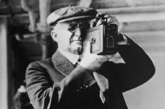
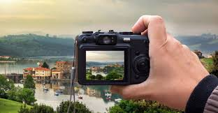

Uno de los precursores más notables de la fotografía fue la cámara oscura, un dispositivo simple que demostraba cómo la luz podía proyectar imágenes en una superficie. Se trataba de una habitación oscura con un pequeño agujero en una de las paredes, a través del cual la luz entraba y proyectaba una imagen invertida en la pared opuesta.
Go somewhereEn 1888, Eastman diseñó la primera cámara Kodak, un diseño simple que utilizaba película en rollo, lo que permitía a los usuarios tomar fotografías sin la necesidad de utilizar placas de vidrio delicadas y costosas.
Go somewhereLas cámaras actuales se combinan con elementos sensibles (películas o sensores) al espectro visible o a otras porciones del espectro electromagnético, y su uso principal es capturar la imagen que se encuentra en el campo visual.
Go somewhereLa fotografía ha desempeñado un papel crucial en la historia, transformando nuestra manera de capturar, preservar y comunicar momentos significativos. Desde su invención, ha sido una herramienta poderosa para documentar eventos históricos, transmitir emociones y contar historias de una manera visualmente impactante.
A lo largo del tiempo, la fotografía no solo ha evolucionado técnicamente, pasando de cámaras analógicas a digitales, sino que también ha influido profundamente en la cultura, el arte y la forma en que interpretamos el mundo que nos rodea.
Como medio de expresión artística y documental, la fotografía ha permitido que las personas y las sociedades se conecten más allá de las barreras geográficas y temporales, dejando una huella duradera en nuestra comprensión del pasado y del presente.
Anterior Siguiente Última